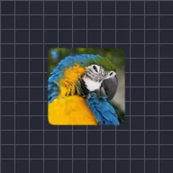

Bóp mặt nạ

Thu nhỏ những phần đục của lớp bằng cách ăn vào viền của chúng.
Cài đặt
| Cài đặt | Loại | Phạm vi | Mặc định |
|---|---|---|---|
| Kích thước | Số | 0 đến 300 | 10 |
| Độ bóp | Số | 50% đến 100% | 75% |
| Độ mềm | Số | 0.001 đến 0.5 | 0.1 |
| Đảo ngược | Bật hoặc tắt | – | Tắt |

Thu nhỏ những phần đục của lớp bằng cách ăn vào viền của chúng.
| Cài đặt | Loại | Phạm vi | Mặc định |
|---|---|---|---|
| Kích thước | Số | 0 đến 300 | 10 |
| Độ bóp | Số | 50% đến 100% | 75% |
| Độ mềm | Số | 0.001 đến 0.5 | 0.1 |
| Đảo ngược | Bật hoặc tắt | – | Tắt |